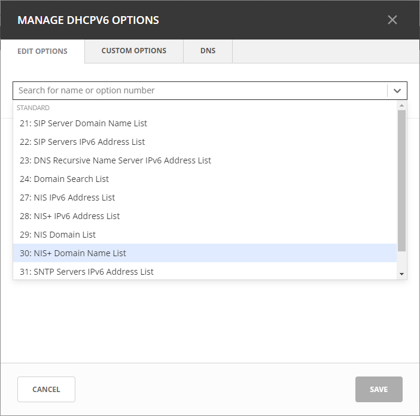
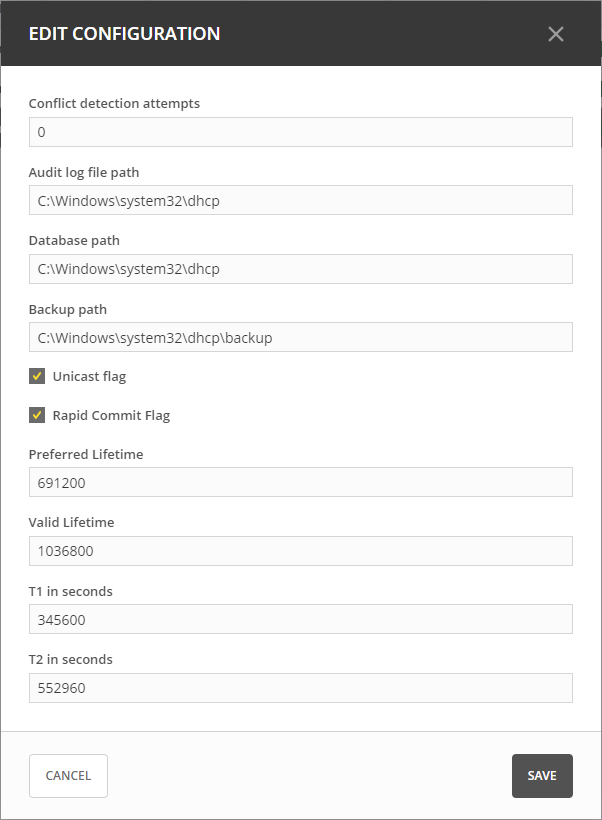

Microsoft DHCP
Defining Options on MS DHCP Servers
On the Admin page, select Service Management in the upper-left corner.
Under DHCP Services in the filtering sidebar, select the applicable Microsoft DHCP server.
On the Action menu, select either Manage DHCPv4 options or Manage DHCPv6 options. You can also select these options on the Row menu (…).
The Manage DHCP Options dialog box opens, showing all options defined on the DHCP server.
Use the drop-down menu to select the option you want to define.
To delete an option, hover over its field, and then click the trash can icon next to it.
Click Save to save the updated options.
{kind=link}
Defining Custom DHCP Options
Click the Custom Options tab.
Select the appropriate Vendor class in the drop-down list.
Adding a New Custom Option
Select Add Custom Option.
Enter the desired ID. An error will show if that ID is not available or invalid.
Enter a name.
Select a Type in the dropdown list. Select the Array checkbox if the option is an Array.
Click Add, and then Save.
Note
Once an option has been defined, you can set its value on the Edit Options tab.
Removing an Existing Custom Option
On the Custom Options tab in the Manage DHCP Options dialog box, select the relevant custom option.
On the Row menu (…), select Remove, and then Yes to confirm.
Configuring DNS Options
In the Manage DHCP Options dialog box, click the DNS tab.
- Enable DNS dynamic updates according to the settings below.
Specifies whether the DHCP server sends DNS dynamic record updates to the DNS server. Updates are sent to DNS servers configured in TCP/IP client properties for any active network connections at the DHCP server.
- Dynamically update DNS A and PTR records.
Specifies that the DHCP server update forward and reverse lookups are based on the type of request made by the client during the lease process.
- Always dynamically update DNS A and PTR records.
Specifies that the DHCP server update forward and reverse DNS lookups when a client acquires a lease, regardless of the type of request used to acquire it.
- Discard A and PTR records when lease is deleted.
Specifies whether the DHCP server discards forward DNS lookups for clients when a lease expires.
- Dynamically update DNS A and PTR records for DHCP clients.
Specifies whether the DHCP server sends dynamic updates to the DNS server for DHCP clients that do not support performing these updates. If selected, clients running earlier versions of Windows are updated by the DHCP server for both their host (A) and pointer (PTR) resource records.
- Disable dynamic updates for DNS PTR records
Turns off dynamic updates for PTR records.
Editing Server Properties
You can edit the configuration of Windows servers.
Select the relevant Windows server.
On the Action menu, select Edit configuration. You can also select this option on the Row menu (…).
In the Edit Configuration dialog box, make the desired changes, and then click Save.

{kind=link}
Conflict detection attempts: Specifies the number of conflict detection attempts you want the DHCP server to make before it leases an address to a client.
Audit log file path: Specifies the location of the DHCP server audit log files.
Database path: Specifies the location of the DHCP server database.
Backup path: Specifies the location for the database backup.
Toggling DHCPv6 Management On and Off
Note
There is only one DHCP service on a Microsoft DHCP server. DHCPv4 and DHCPv6 are not decoupled in Microsoft as they are in Micetro. Any action performed on either DHCPv6 or DHCPv4 that requires a restart of the service will result in a restart of the single DHCP service on the Microsoft server.
On the Admin page, select the relevant Microsoft DHCP server.
On the Action menu, select Edit service. You can also select this option on the Row menu (…).
Select Manage DHCPv6 service to enable DHCPv6 management on the server(s) you selected.
Click Confirm.
Reconciling Scopes
The Reconcile DHCP Scopes option is used to fix inconsistencies between information in the registry and the DHCP database. For more information about how to reconcile MS DHCP servers, see Reconcile Scopes.